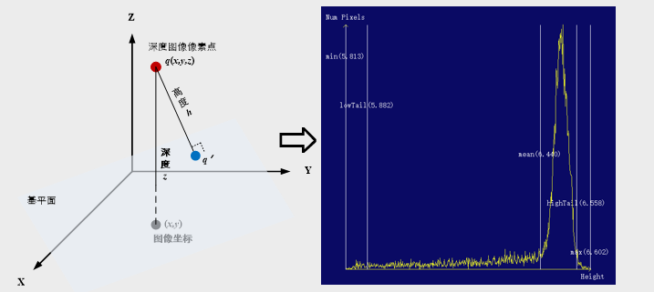
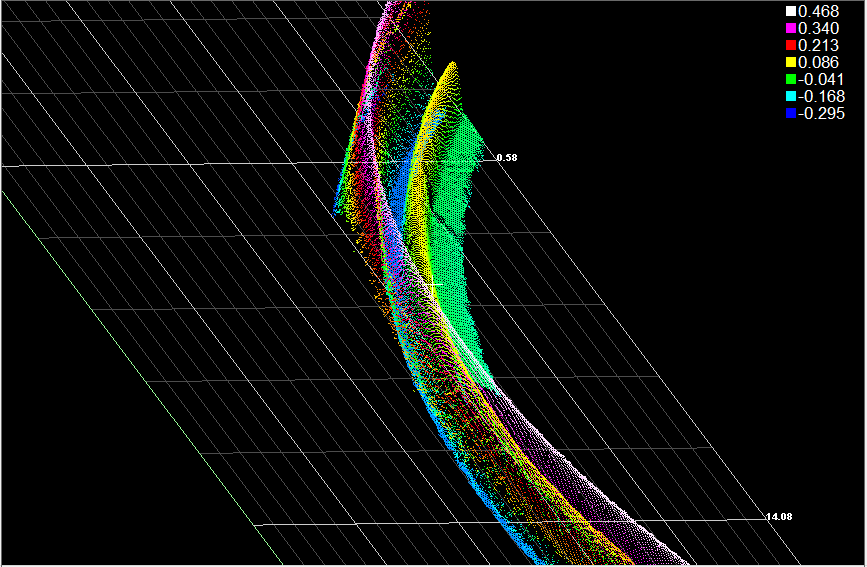
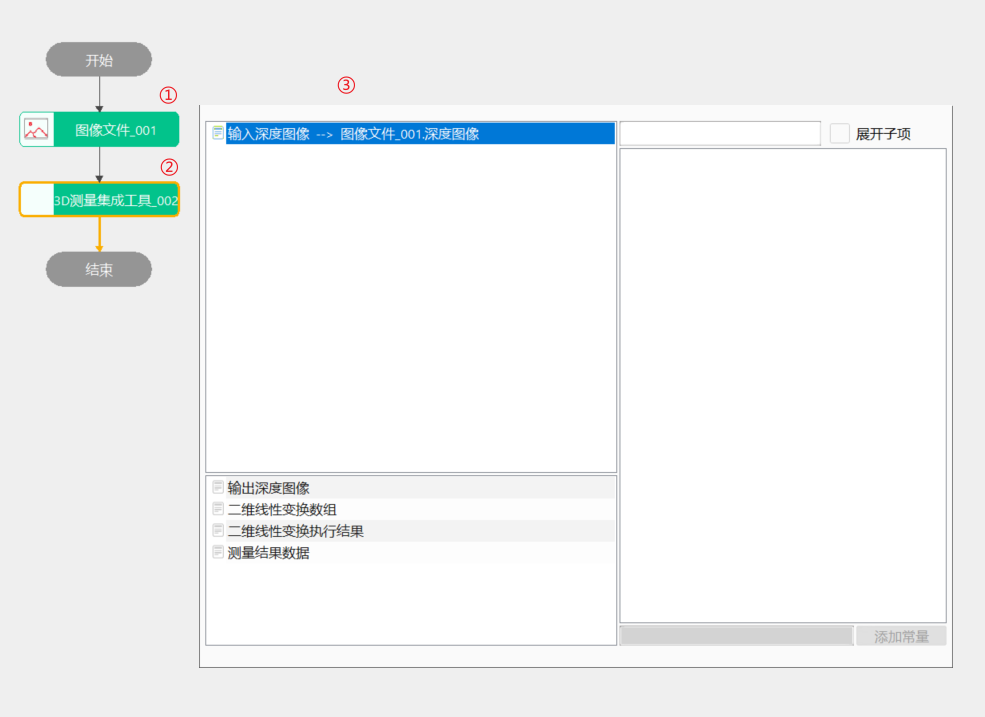
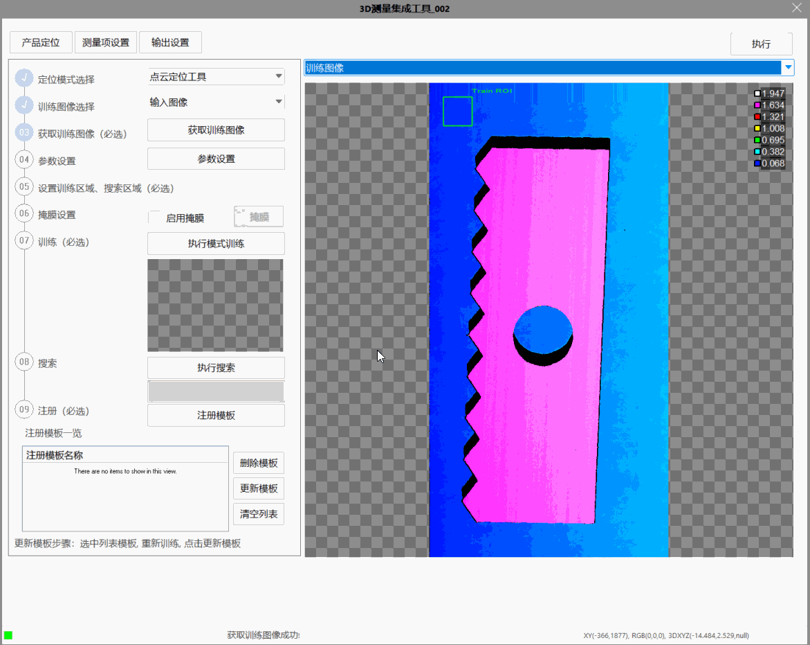
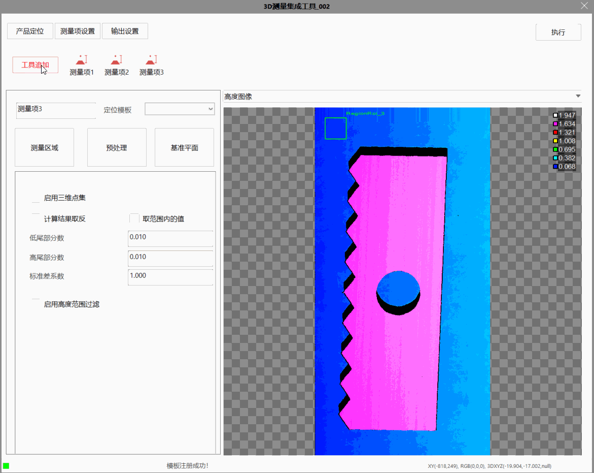
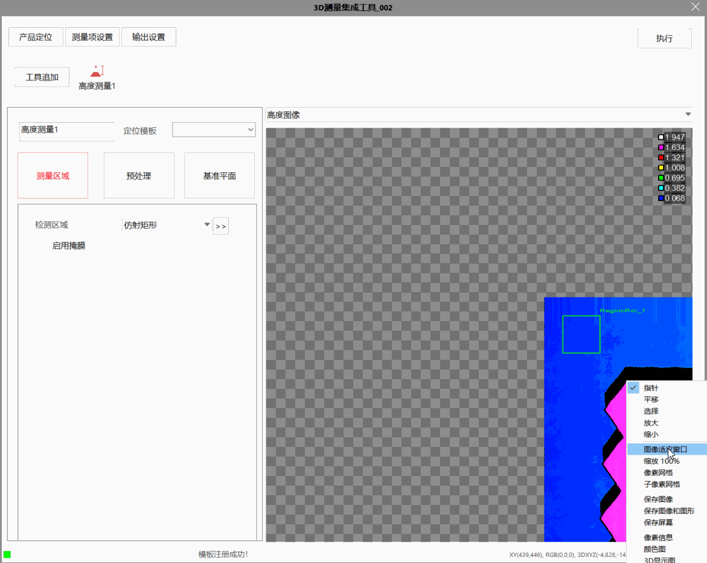
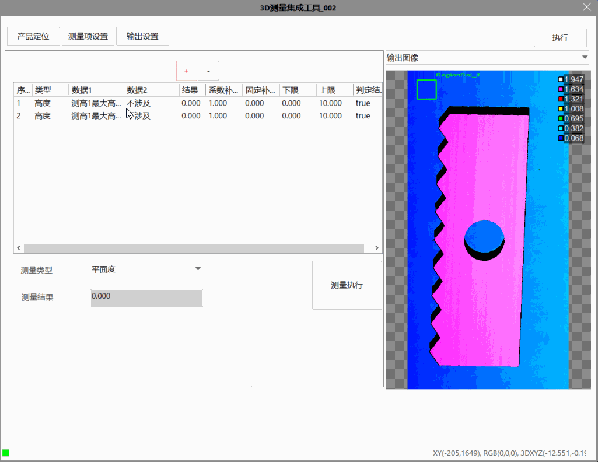

3D测量集成工具对单图像段内的高度检测、参数设置、结果显示等流程进行固化集成，内部集成了点云定位、预处理、带局外点平面拟合、高度测量、点云位置测量等工具功能，以达到简化检测工程、提高调试效率，增加工程扩展性的目的。
典型的应用场景如：结构件落差测量，获取感兴趣区域内三维空间点到指定基平面的高度距离，完成高度信息统计。一般先指定基平面，以及感兴趣区域内三维空间点的位置坐标；然后通过查看高度直方图，即描述高度数据分布情况的统计信息，包括：高度直方图、最小值、最大值、均值、中值、标准差、低尾部和高尾部等信息。调整相应的参数使得测量结果满足重复性、相关性等现场对齐要求。




工具执行流程：配置输入→设定参数→训练图像→执行搜索。
（1）点击“获取训练图像”：更新训练图像，点击后会先进行弹框提示；
（2）点击“执行模式训练”：进行训练；
（3）根据设定的搜索参数和判定结果参数返回相应的搜索结果。
测量项的定位模板为Step1中注册的模板或从外部定位工具获取的模板；测量子项的添加过程如图3_3所示；图3_4演示了子项参数设置操作。


注：使用者在设置预处理时，建议根据具体的图像情况选择合适的预处理工具，预处理参数设置过程中会实时执行并得到结果图像。
输出设置具通过获取当前测量项的所有子项的最大高度、最小高度和平均高度，添加至对应的列表中，然后通过ID获取相应的测量结果、通过修改测量类型（可以选择高度或段差），系数补偿、固定补偿和阈值上下限，执行得到结果。具体设定见图3_5所示。

| 参数名称 | 参数描述 |
|---|---|
| 二维线性变换数组 | 产品定位执行后的刚性变换矩阵； |
| 二维线性变换执行结果 | 产品定位执行的结果OK/NG； |
| 测量结果数据 | 输出设置中各个结果值所包含的参数，包括系数补偿、固定补偿、阈值上下限等参数，引用时需要注意类型转换 |
| 执行结果 | 工具执行结果； |
| 执行时间 | 工具执行时间； |
| 输入深度图像 | 显示检测的深度图像，显示为伪彩色图像； |
| 输出深度图像 | 显示工具执行检测后的深度图像； |
| 输出轮廓数组 | 输出截面生成功能执行后的输出轮廓数组； |
参见“\Samples\3D\深度图\3D测量集成工具.gvp”。
a、 颗粒度：图像中最小检测特征的度量，是对要检测的最小图像特征尺寸的一种描述。颗粒度越大，采样间隔越大，训练时提取的最小特征尺寸越大。随着颗粒度增加，能获取特征的目标尺寸增大，有效特征数量不断减少；
b、 精细颗粒度：模式训练过程中用于检测精细特征所设置的较小颗粒度。精细颗粒度可以有效地保留小尺寸目标的边缘特征或大尺寸目标中的局部细节特征，可提高实时搜索的定位精度，但可能导致定位耗时增多；
c、 噪声阈值：模式训练过程中，有效边缘点梯度幅值的最小值。梯度幅值低于噪声阈值的边缘点将视为噪声点被滤除”；
d、 边缘强度：模式训练过程中，有效边缘特征链（由多个有效边缘点组成）的梯度幅值的最小值。梯度幅值和低于边缘强度阈值的短链和弱边缘长链将被滤除；